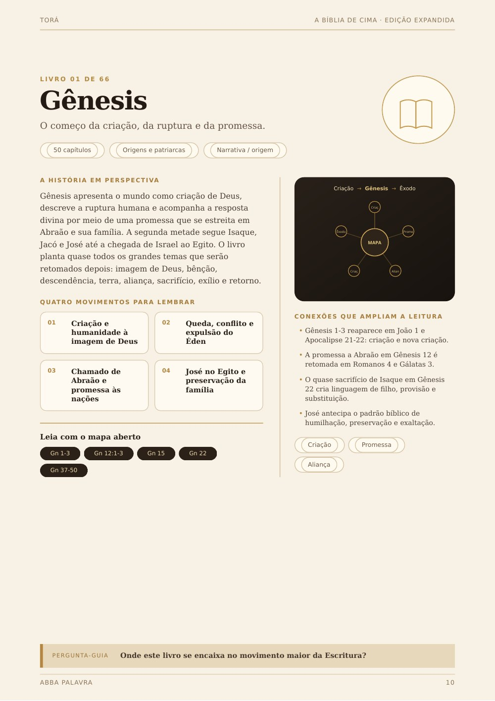
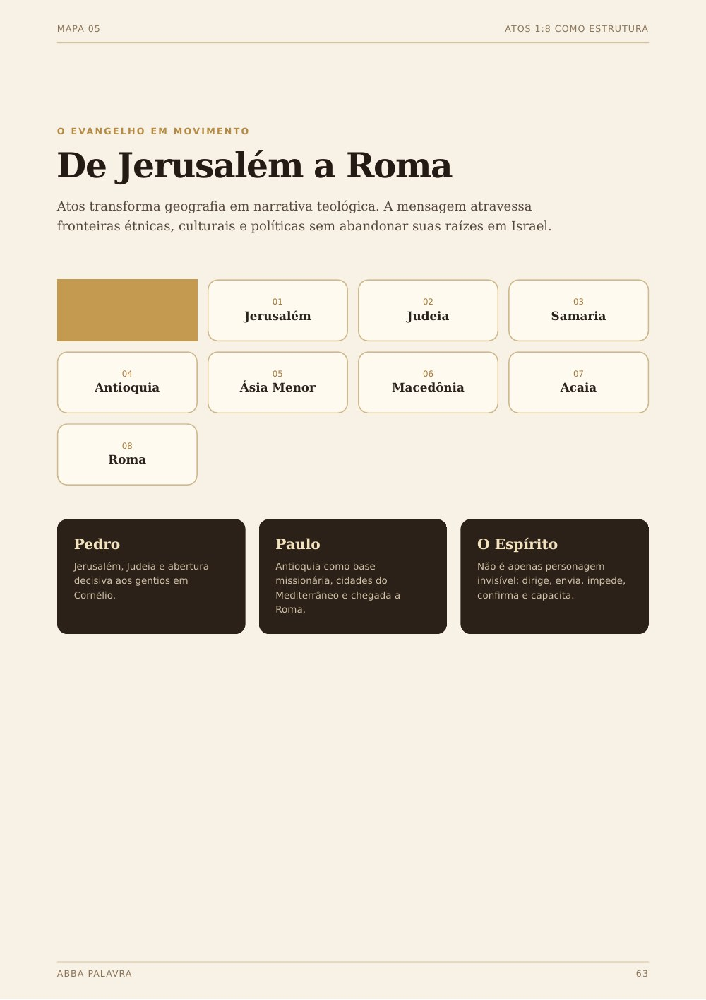
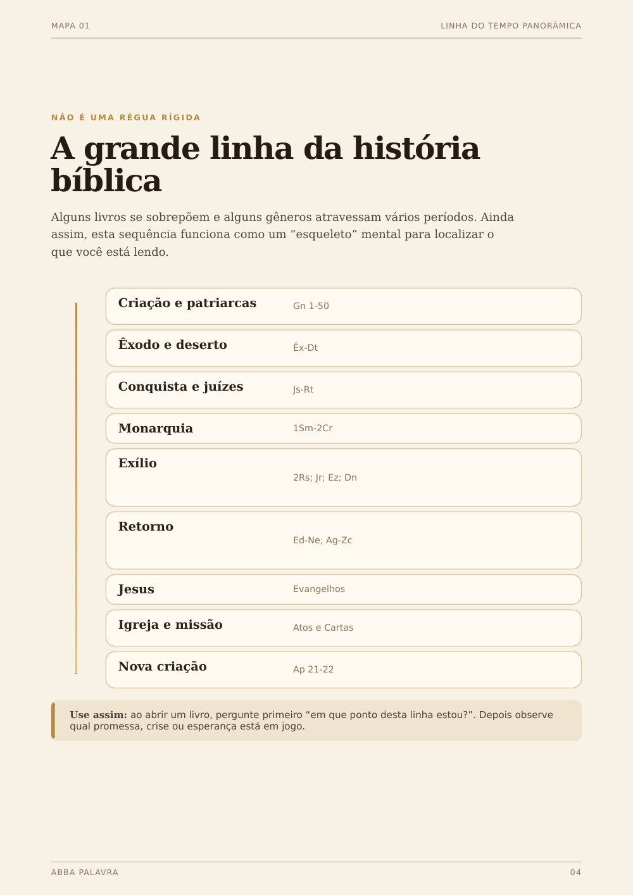
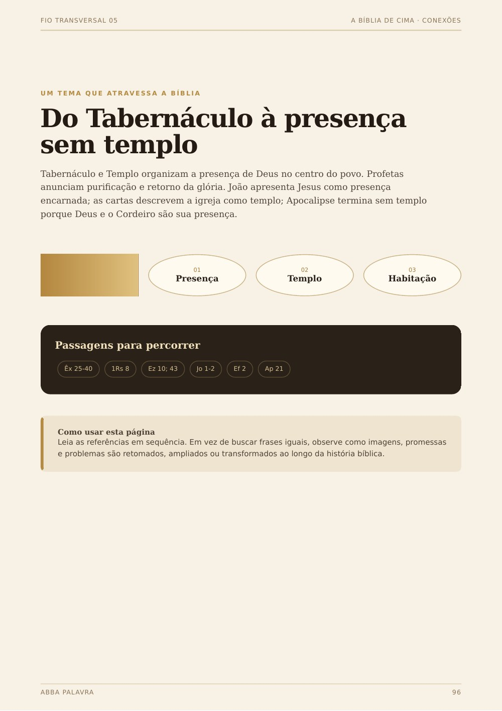

Você chega em Hebreus e precisa lembrar Levítico
Sacrifício, sacerdócio e aliança ganham outra profundidade quando o pano de fundo está acessível.
A Bíblia de Cima é um guia visual para você localizar os 66 livros, entender o que veio antes, perceber o que vem depois e enxergar conexões que costumam passar despercebidas numa leitura isolada.


Escolha uma situação abaixo. É esse tipo de consulta que transforma o produto de “conteúdo interessante” em uma ferramenta que você realmente usa enquanto lê.
O perfil do livro ajuda a organizar origem, grandes movimentos, passagens-chave e conexões que reaparecem no restante da Escritura.

Em vez de tratar Atos como uma coleção de viagens e milagres, o mapa ajuda a perceber expansão, personagens, geografia e relação com as cartas.

Isso é especialmente útil em Reis, Crônicas, profetas, exílio, retorno e no período em que os livros se sobrepõem.

Os fios temáticos ajudam a revisitar ideias e imagens que aparecem, se desenvolvem e reaparecem ao longo da Escritura.

A dor não é “não saber Bíblia”. É ter informação suficiente para reconhecer as peças, mas não uma estrutura simples para relacioná-las.
Sacrifício, sacerdócio e aliança ganham outra profundidade quando o pano de fundo está acessível.
Antes do exílio, durante o exílio ou depois dele? Essa localização muda a forma como você entende a mensagem.
As histórias são familiares, porém a relação entre promessa, aliança, reino, exílio, Messias e nova criação pode ficar fragmentada.
A Bíblia de Cima concentra um mapa de consulta para reduzir esse recomeço e devolver rapidamente a visão panorâmica.
Você usa o material como apoio antes, durante ou depois da leitura.
Descubra em que parte da história o livro está e o que aconteceu ao redor dele.
Veja movimentos, passagens-chave e temas que merecem sua atenção durante a leitura.
Identifique relações com outros livros e volte aos textos indicados para comparar.
Quando esquecer o contexto, consulte novamente sem precisar reconstruir tudo do zero.
A edição expandida tem conteúdo em todas as frentes essenciais da proposta: panorama, perfis livro por livro, mapas, fios temáticos, conexões e trilhas para continuar estudando.


O Pacote Completo reúne o guia principal e 3 complementos para você alternar entre panorama, contexto rápido, gênero literário e conexões entre os testamentos.
Acesso digital após aprovação. Você recebe os 4 materiais apresentados nesta página.
Quero estudar com o mapa completo →
Não é quantidade por quantidade. Cada peça foi pensada para resolver um tipo de dúvida que aparece quando você lê a Bíblia.
Algumas situações em que o material pode ficar aberto ao lado da sua Bíblia:
Volte ao panorama e situe a mensagem em relação aos reis, à queda, ao exílio ou à restauração.
Use a visão geral para relacionar a igreja, o ambiente do Novo Testamento e o movimento missionário de Atos.
Use as conexões para voltar às raízes do tema e observar como a ideia é retomada.
Comece pela visão de cima e só depois aprofunde. O mapa ajuda a organizar a explicação antes de entrar nas partes.
Se dentro do prazo de 7 dias você concluir que A Bíblia de Cima não faz sentido para o seu estudo, solicite o reembolso conforme as regras da garantia.
Leve o Pacote Completo com A Bíblia de Cima + 3 materiais complementares.
Formato, público, acesso e garantia de forma direta.
Não. É um conjunto de materiais visuais de consulta para ajudar você a localizar livros, recuperar contexto e observar conexões enquanto estuda a Bíblia.
Não. A proposta é justamente ser útil para quem já lê a Bíblia e quer organizar melhor o que encontra, sem depender de formação acadêmica.
Não. O produto é digital e entregue em PDF pela área de membros após a aprovação da compra.
Sim. Você pode consultar os PDFs no celular e computador ou imprimi-los para uso pessoal.
O Pacote Completo inclui A Bíblia de Cima e os três complementos: Ficha dos 66 Livros, Guia de Gêneros Literários e Mapa de Conexões Entre os Testamentos. O Básico inclui apenas o guia principal.
Você tem 7 dias para conhecer o material. Se dentro desse prazo decidir que ele não faz sentido para você, pode solicitar o reembolso de acordo com a garantia.